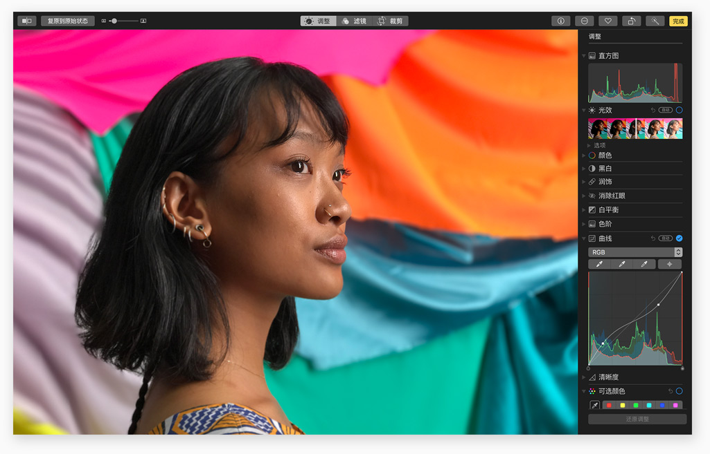

macOS High Sierra 引入了一系列新的核心技术，来增强 Mac 中至关重要的功能。无论是重新设计数据存储架构，提升视频流媒体传输效率，还是充分释放图形处理器的全部性能，都是今天 Mac 使用体验的关键所在。
各种文档，海量照片，一封封邮件，还有五花八门的 app，对 Mac 来说，你所在乎的这一切都是数据。而文件系统，正是将所有这些数据整理为不同的文件和文件夹，让你轻松点击即可访问。我们当前的文件系统设计于 Mac 诞生之初，表现一直都很出色。但如今，搭载闪存技术的 Mac 系统开辟了又一片创新天地，这正是一个奠定新基础的大好机会。因此在 macOS High Sierra 中，我们为配备全闪存内置存储设备的 Mac 带来 Apple 文件系统。它先进的架构设计，将安全性和响应速度提升到一个新高度。
技术先进。 新的 64 位架构既为当今的闪存技术而设计，也为将来出现的各种存储功能而准备就绪。
响应灵敏。 经过精心设计，像复制文件和查看文件夹内容大小这类常见任务，即时可完成。
安全可靠。 内置的加密功能、崩溃安全保护功能，以及简明方便的数据备份功能，让你更加安心无忧。
随着 4K 视频越来越流行，Mac 迎来了 HEVC (高效视频编码，也称 H.265) 这一新的行业标准1。与现行的 H.264 视频压缩标准相比，它的视频压缩率最高可提升 40% 之多。使用 HEVC，在保持视频画质不变的情况下，视频流媒体传输效果更好，占用的 Mac 存储空间也更小2。
压缩率提升最高可达现在，你可以使用照片 app 的新功能，以不同以往的方式来浏览、整理和编辑你的照片；可以在 Safari 浏览器中定制只属于自己的网页浏览体验；还可以在邮件收件箱中更快找到想要的邮件。macOS High Sierra，让 Mac 使用体验更加精彩。
很多人都喜欢在 Mac 上处理照片。 因此在 macOS High Sierra 中，我们专注于为你打造一系列新工具，让你的图库整理、照片编辑更高效，用起来更有乐趣。
进一步了解 macOS 版照片 app > 一直在旁守候的侧边栏，可让你快速查找需要的内容；扩展的“导入”视图会按时间顺序显示你之前导入的所有项目，让你一下子就能找到上个月的度假照片；而你创建的相簿也处在显眼位置，让你一眼就能看到。
现在，照片 app 可让你根据自己的喜好，快速筛选出照片精选。新的选择计数器会确切记住你的选择，还能让你将选出的照片拖放到相簿中或导出到桌面上。你还可直接在工具栏上批量旋转和收藏照片。
各种功能强大的工具，可让你轻轻松松对照片进行精细的对比度和色彩调整，比如用“曲线”来微调对比度，用“可选颜色”来让颜色更饱和鲜艳。你还可以运用一系列有着专业级效果的新滤镜，随手就让照片别具一格。
试试新的“循环”效果，它能将实况照片变成循环视频，让你一遍遍重温精彩时刻；还可以玩玩“来回播放”功能，它能双向来回播放动作；或者是选择“长曝光”，像使用数码单反那样，营造出惊艳的水流涌动或拉长光轨效果。 你还可以对每张实况照片进行修剪和静音，并为其选出最具代表性的画面。